← Start Now! — Meditação e exercícios espirituais
Meditações da Escola Esotérica
Aprenda o capítulo pelas suas lições e compare as passagens correspondentes.
PDF 174–208 · 6 lições de ensino
Sentenças vivas e Eu superior
Diferencie fórmula espiritual e autoafirmação.
Figuras, AUM e transformação
Use os desenhos reais, sem inventar formas ausentes.
EU SOU, temas curtos e imagem protetora
Diferencie referências corporais, imagens espirituais e conduta.
Sabedoria na luz; pensar, sentir e querer
Aprenda o sentimento que acompanha um mantra.
Corpo, espírito e trabalho cósmico
Leia os mantras maiores como transformações estruturadas.
Mantra tríplice, som e borboleta
Conserve distintas e compreensíveis as sequências simbólicas.
Textos de prática e leitor da fonte
Estas são páginas selecionadas do capítulo, incluindo textos longos de prática. A página inglesa original é referência para palavras ou disposição incertas. O OCR pode conter erros e não é nova edição verificada. Abra a imagem em tamanho integral para os detalhes.
Posição no PDF 174 · Inglês
Abra a página original em tamanho integral

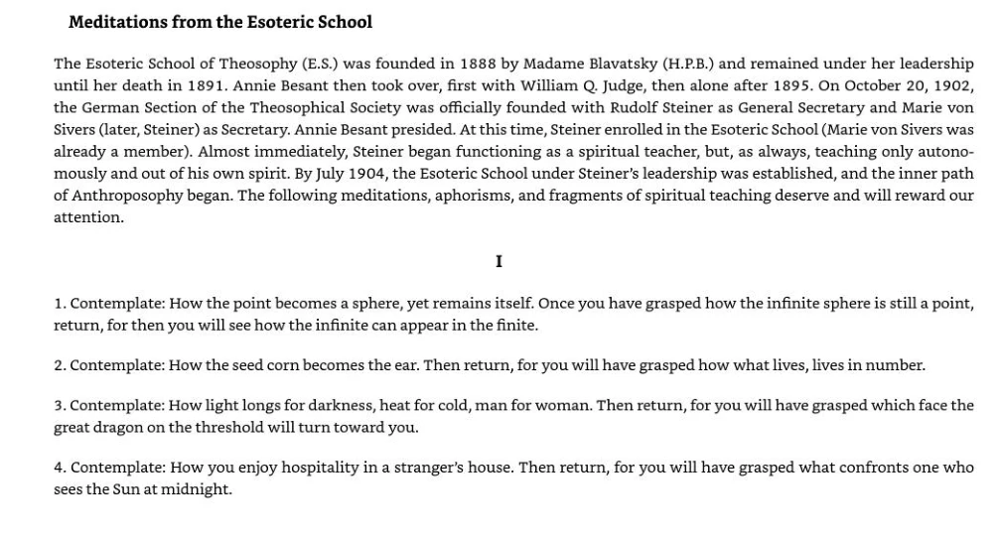
Leia a transcrição pesquisável
Meditations from the Esoteric School
The Esoteric School of Theosophy (E.S.) was founded in 1888 by Madame Blavatsky (H.P.B.) and remained under her leadership until her death in 1891. Annie Besant then took over, first with William Q. Judge, then alone after 1895. On October 20, 1902, the German Section of the Theosophical Society was officially founded with Rudolf Steiner as General Secretary and Marie von Sivers (later, Steiner) as Secretary. Annie Besant presided. At this time, Steiner enrolled in the Esoteric School (Marie von Sivers was already a member). Almost immediately, Steiner began functioning as a spiritual teacher, but, as always, teaching only autono- mously and out of his own spirit. By July 1904, the Esoteric School under Steiner's leadership was established, and the inner path of Anthroposophy began. The following meditations, aphorisms, and fragments of spiritual teaching deserve and will reward our attention.
1. Contemplate: How the point becomes a sphere, yet remains itself. Once you have grasped how the infinite sphere is still a point,
return, for then you will see how the infinite can appear in the finite.
2. Contemplate: How the seed corn becomes the ear. Then return, for you will have grasped how what lives, lives in number.
3. Contemplate: How light longs for darkness, heat for cold, man for woman. Then return, for you will have grasped which face the
great dragon on the threshold will turn toward you.
4. Contemplate: How you enjoy hospitality in a stranger's house. Then return, for you will have grasped what confronts one who
sees the Sun at midnight.Posição no PDF 175 · Inglês
Abra a página original em tamanho integral

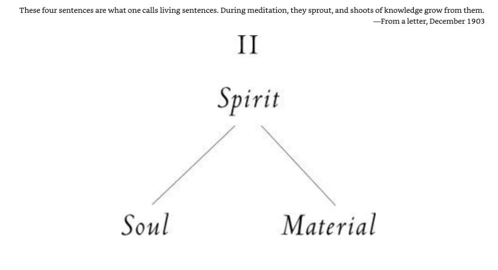
Leia a transcrição pesquisável
These four sentences are what one calls living sentences. During meditation, they sprout, and shoots of knowledge grow from them.
—From a letter, December 1903
r
## Soul
## Spirit
Jf ™
%
.
## MaterialPosição no PDF 176 · Inglês
Abra a página original em tamanho integral

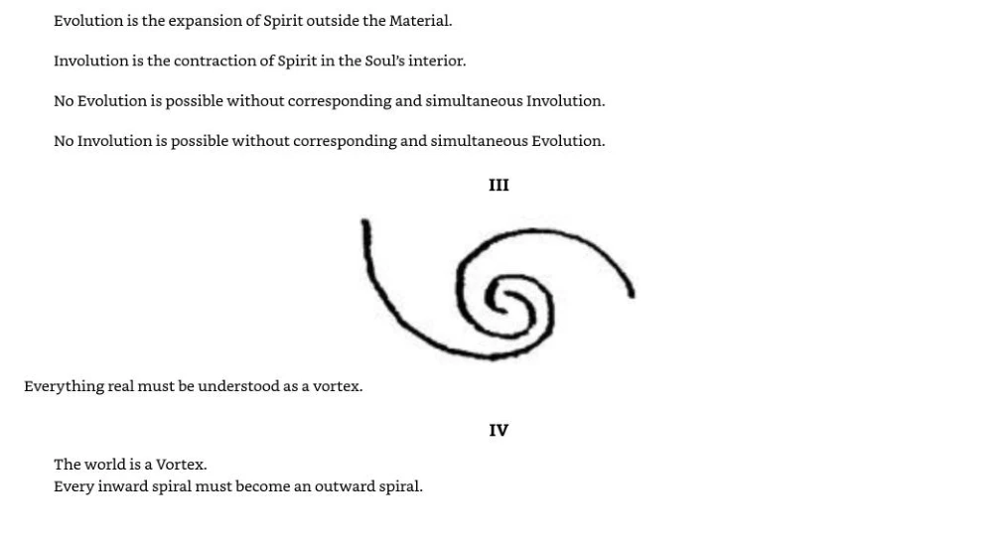
Leia a transcrição pesquisável
Evolution is the expansion of Spirit outside the Material.
Involution is the contraction of Spirit in the Soul’s interior.
No Evolution is possible without corresponding and simultaneous Involution.
No Involution is possible without corresponding and simultaneous Evolution.
Ill
Everything real must be understood as a vortex.
The world is a Vortex.
Every inward spiral must become an outward spiral.
IVPosição no PDF 177 · Inglês
Abra a página original em tamanho integral

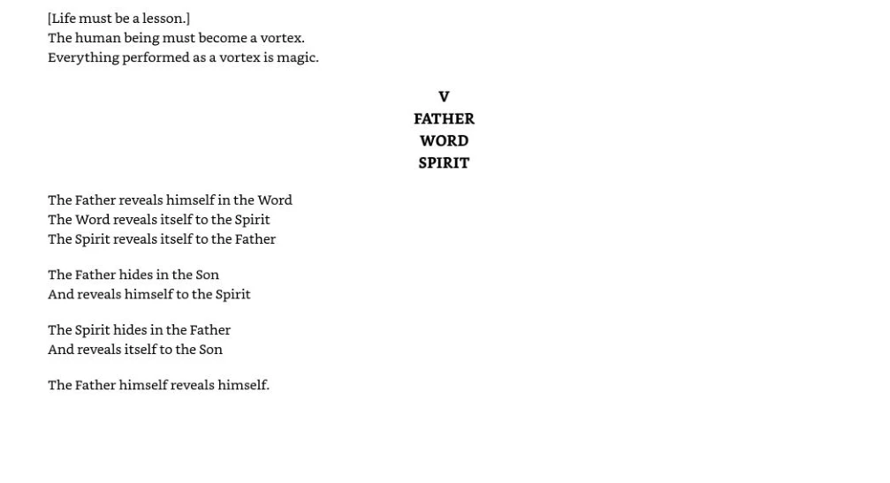
Leia a transcrição pesquisável
[Life must be a lesson.] The human being must become a vortex. Everything performed as a vortex is magic.
The Father reveals himself in the Word
The Word reveals itself to the Spirit The Spirit reveals itself to the Father
The Father hides in the Son
And reveals himself to the Spirit
The Spirit hides in the Father And reveals itself to the Son
The Father himself reveals himself.
Vv
FATHER
WORD
SPIRITPosição no PDF 178 · Inglês
Abra a página original em tamanho integral

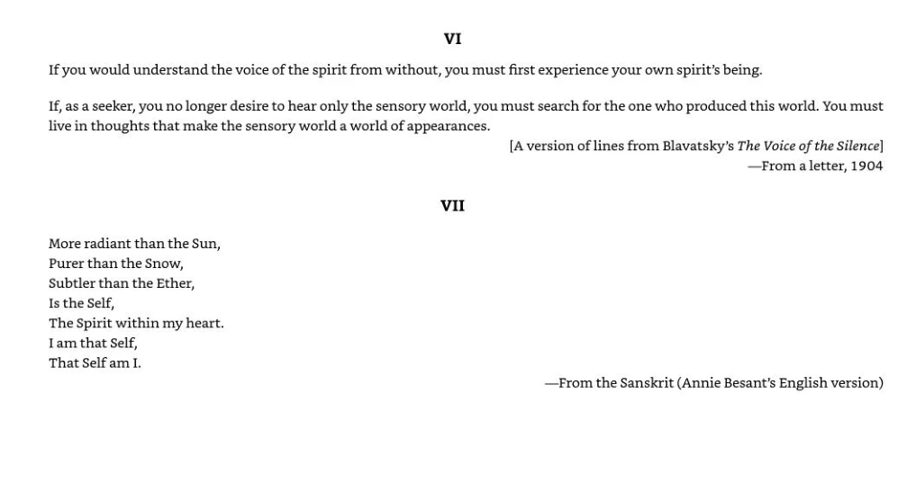
Leia a transcrição pesquisável
vI
If you would understand the voice of the spirit from without, you must first experience your own spirit’s being.
If, as a seeker, you no longer desire to hear only the sensory world, you must search for the one who produced this world. You must live in thoughts that make the sensory world a world of appearances.
[A version of lines from Blavatsky’s The Voice of the Silence]
—From a letter, 1904
Vil
More radiant than the Sun, Purer than the Snow, Subtler than the Ether, Is the Self, The Spirit within my heart. Iam that Self, That Self am I.
—From the Sanskrit (Annie Besant’s English version)Posição no PDF 179 · Inglês
Abra a página original em tamanho integral

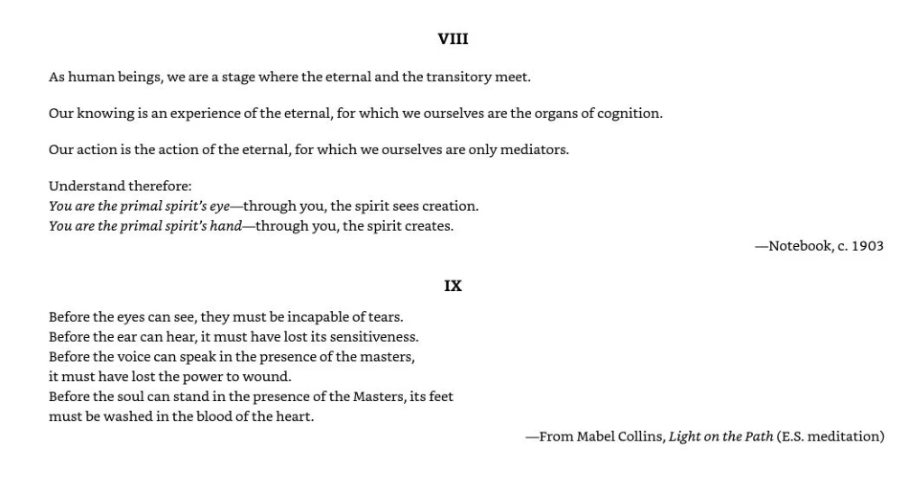
Leia a transcrição pesquisável
### VIII
As human beings, we are a stage where the eternal and the transitory meet.
Our knowing is an experience of the eternal, for which we ourselves are the organs of cognition.
Our action is the action of the eternal, for which we ourselves are only mediators.
Understand therefore:
You are the primal spirit’s eye—through you, the spirit sees creation. You are the primal spirit’s hand—through you, the spirit creates.
—Notebook, c. 1903
Before the eyes can see, they must be incapable of tears.
Before the ear can hear, it must have lost its sensitiveness. Before the voice can speak in the presence of the masters,
it must have lost the power to wound.
Before the soul can stand in the presence of the Masters, its feet must be washed in the blood of the heart.
—From Mabel Collins, Light on the Path (E.S. meditation)Posição no PDF 180 · Inglês
Abra a página original em tamanho integral

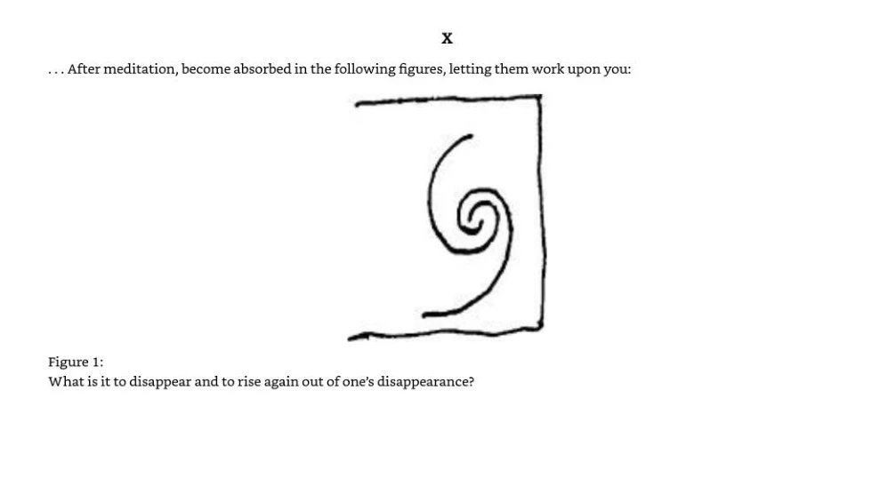
Leia a transcrição pesquisável
».4
... After meditation, become absorbed in the following figures, letting them work upon you:
-_
Figure 1: What is it to disappear and to rise again out of one’s disappearance?Posição no PDF 181 · Inglês
Abra a página original em tamanho integral

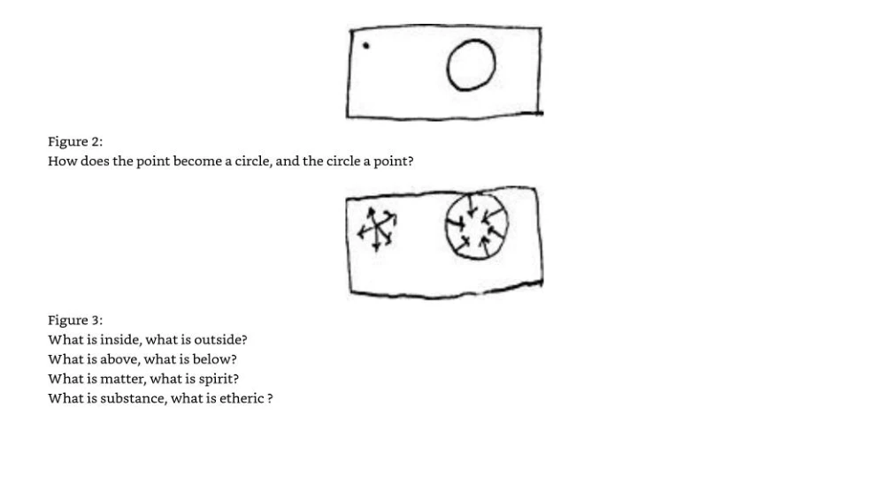
Leia a transcrição pesquisável
|
Figure 2:
How does the point become a circle, and the circle a point?
&
Figure 3:
What is inside, what is outside? What is above, what is below? What is matter, what is spirit? What is substance, what is etheric ?
—— olPosição no PDF 182 · Inglês
Abra a página original em tamanho integral

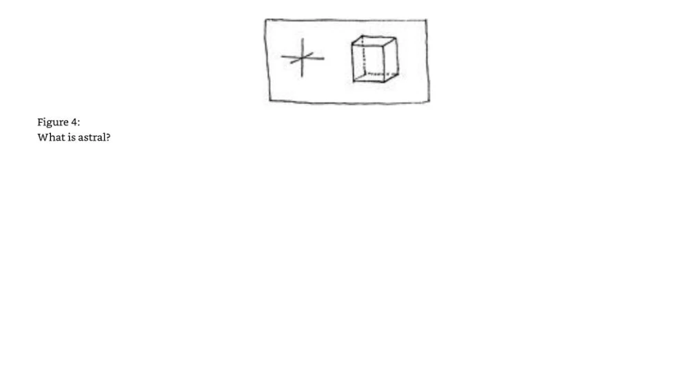
Leia a transcrição pesquisável
Figure 4: What is astral?Posição no PDF 183 · Inglês
Abra a página original em tamanho integral

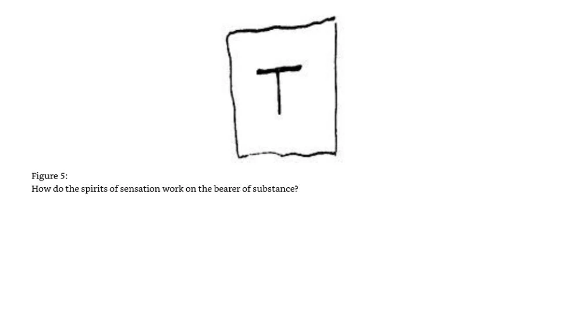
Leia a transcrição pesquisável
——
Figure 5: How do the spirits of sensation work on the bearer of substance?Posição no PDF 184 · Inglês
Abra a página original em tamanho integral

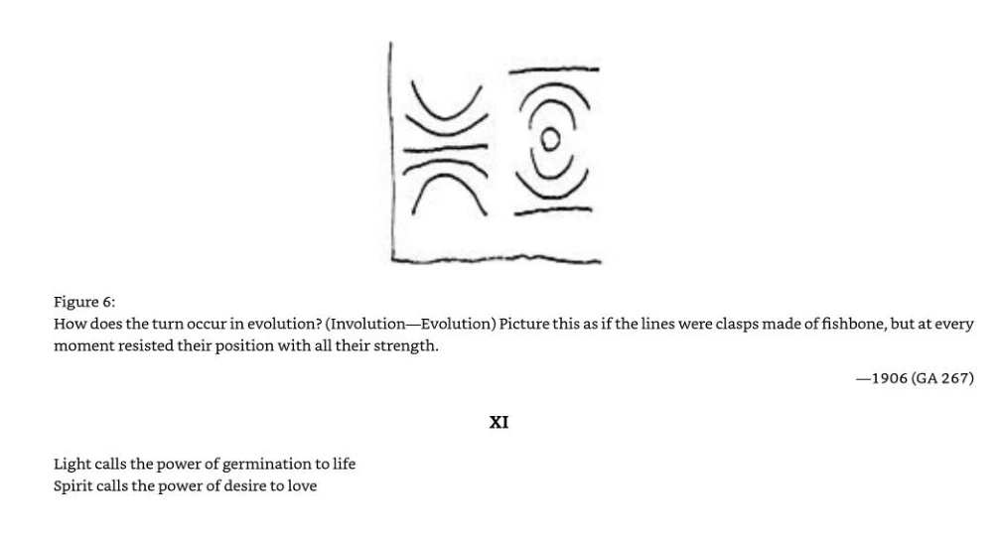
Leia a transcrição pesquisável
Y
))
a v Y
Figure 6: How does the turn occur in evolution? (Involution—Evolution) Picture this as if the lines were clasps made of fishbone, but at every moment resisted their position with all their strength.
—1906 (GA 267)
Light calls the power of germination to life Spirit calls the power of desire to love
XIPosição no PDF 185 · Inglês
Abra a página original em tamanho integral

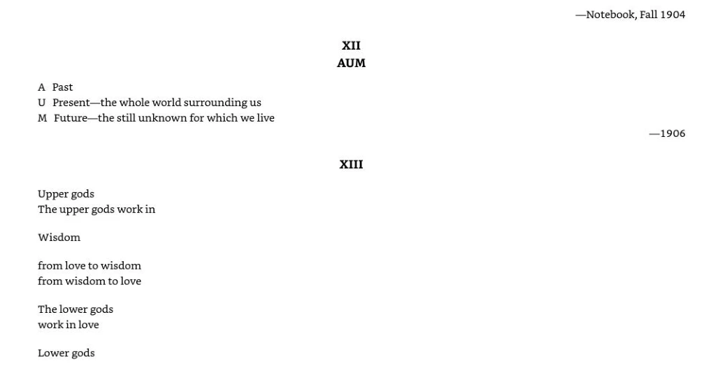
Leia a transcrição pesquisável
A Past
U_ Present—the whole world surrounding us M Future—the still unknown for which we live
Upper gods The upper gods work in
Wisdom
from love to wisdom
from wisdom to love
The lower gods work in love
Lower gods
XII
AUM
### XIII
—Notebook, Fall 1904
—1906Posição no PDF 186 · Inglês
Abra a página original em tamanho integral

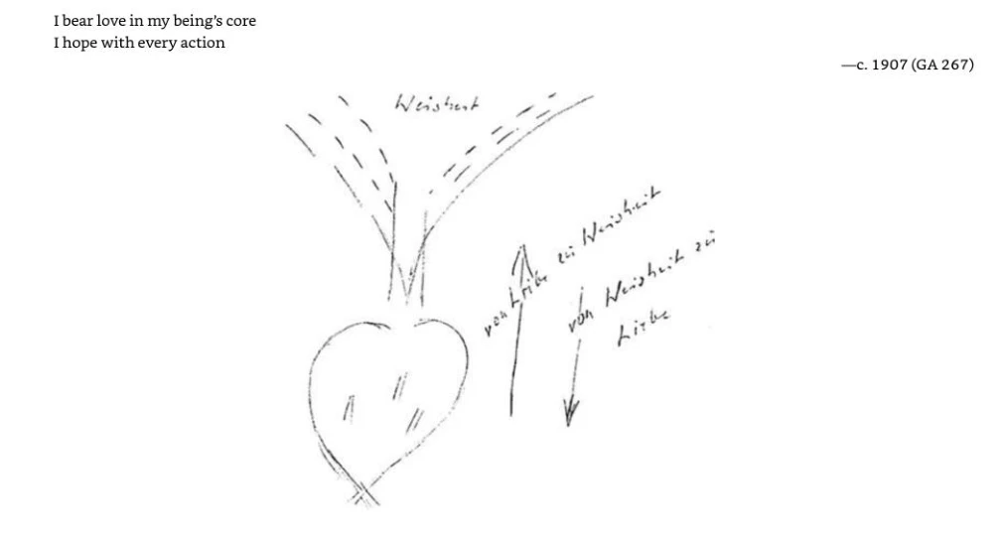
Leia a transcrição pesquisável
I bear love in my being’s core
I hope with every action
Age
- ~ " Me's test
\ \
Toe LO
\* . wee
. *
ae
{ ‘ va /
W
+ ‘ he
rr
—c. 1907 (GA 267)Posição no PDF 187 · Inglês
Abra a página original em tamanho integral

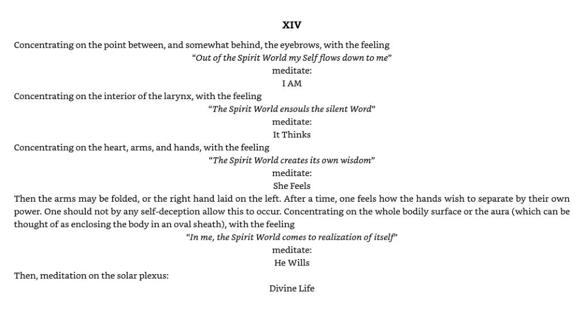
Leia a transcrição pesquisável
XIV
Concentrating on the point between, and somewhat behind, the eyebrows, with the feeling
“Out of the Spirit World my Self flows down to me”
meditate:
IAM
Concentrating on the interior of the larynx, with the feeling
“The Spirit World ensouls the silent Word”
meditate:
It Thinks
Concentrating on the heart, arms, and hands, with the feeling
“The Spirit World creates its own wisdom”
meditate:
She Feels
Then the arms may be folded, or the right hand laid on the left. After a time, one feels how the hands wish to separate by their own power. One should not by any self-deception allow this to occur. Concentrating on the whole bodily surface or the aura (which can be thought of as enclosing the body in an oval sheath), with the feeling
“In me, the Spirit World comes to realization of itself”
meditate:
Then, meditation on the solar plexus:
He Wills
Divine LifePosição no PDF 188 · Inglês
Abra a página original em tamanho integral

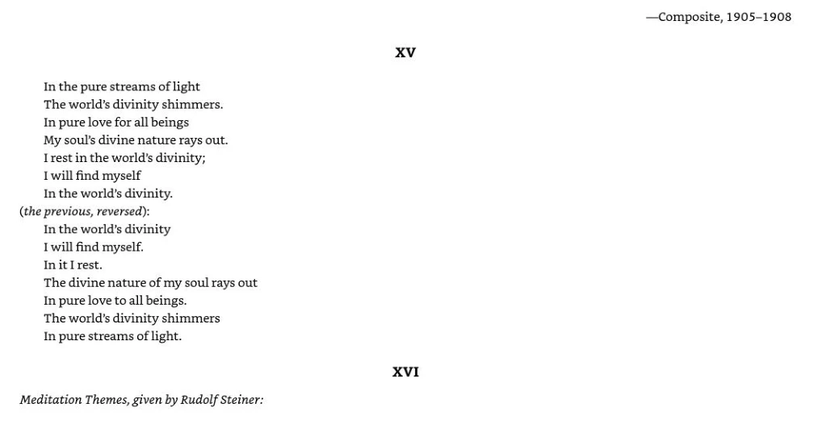
Leia a transcrição pesquisável
In the pure streams of light The world’s divinity shimmers. In pure love for all beings My soul’s divine nature rays out. I rest in the world’s divinity; I will find myself In the world’s divinity. (the previous, reversed): In the world’s divinity I will find myself. In it I rest.
The divine nature of my soul rays out In pure love to all beings. The world’s divinity shimmers In pure streams of light.
Meditation Themes, given by Rudolf Steiner:
XV
—Composite, 1905-1908Posição no PDF 189 · Inglês
Abra a página original em tamanho integral

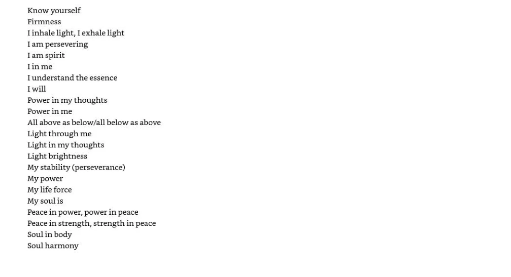
Leia a transcrição pesquisável
Know yourself
Firmness
[inhale light, I exhale light Iam persevering
Iam spirit
Ilinme
I understand the essence
I will
Power in my thoughts
Power in me
All above as below/all below as above
Light through me
Light in my thoughts
Light brightness
My stability (perseverance)
My power
My life force
My soul is
Peace in power, power in peace Peace in strength, strength in peace Soul in body
Soul harmonyPosição no PDF 190 · Inglês
Abra a página original em tamanho integral

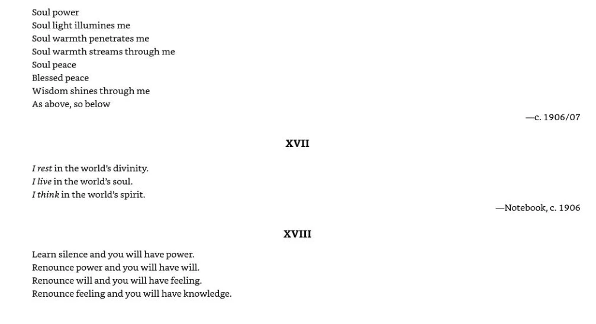
Leia a transcrição pesquisável
Soul power
Soul light illumines me
Soul warmth penetrates me
Soul warmth streams through me Soul peace
Blessed peace
Wisdom shines through me
As above, so below
I rest in the world’s divinity. I live in the world’s soul.
I think in the world’s spirit.
Learn silence and you will have power. Renounce power and you will have will. Renounce will and you will have feeling. Renounce feeling and you will have knowledge.
### XVII
### XVIII
—c. 1906/07
—Notebook, c. 1906Posição no PDF 191 · Inglês
Abra a página original em tamanho integral

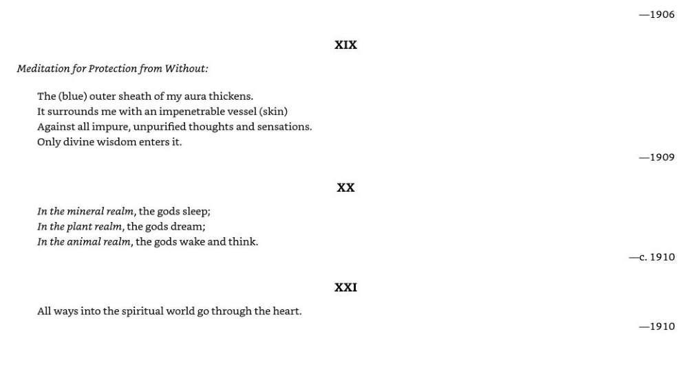
Leia a transcrição pesquisável
Meditation for Protection from Without:
The (blue) outer sheath of my aura thickens. It surrounds me with an impenetrable vessel (skin) Against all impure, unpurified thoughts and sensations. Only divine wisdom enters it.
In the mineral realm, the gods sleep; In the plant realm, the gods dream; In the animal realm, the gods wake and think.
All ways into the spiritual world go through the heart.
XIX
—1906
—1909
—c. 1910
—1910Posição no PDF 192 · Inglês
Abra a página original em tamanho integral

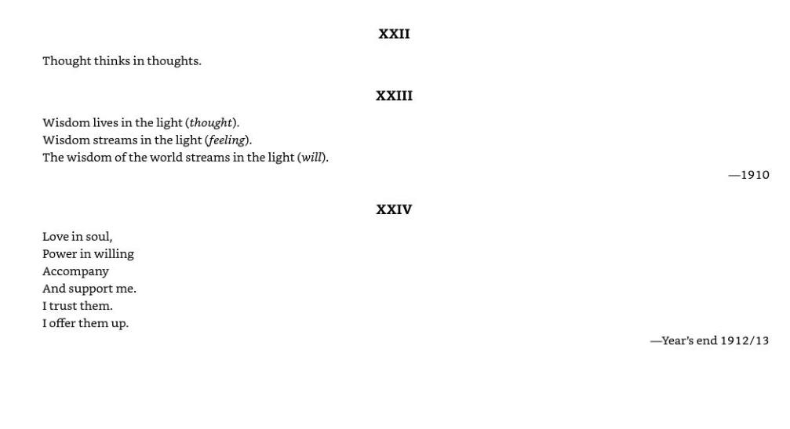
Leia a transcrição pesquisável
Thought thinks in thoughts.
Wisdom lives in the light (thought). Wisdom streams in the light (feeling). The wisdom of the world streams in the light (will).
Love in soul, Power in willing Accompany And support me. I trust them.
I offer them up.
XXII
### XXIII
### XXIV
—1910
—Year’s end 1912/13Posição no PDF 193 · Inglês
Abra a página original em tamanho integral

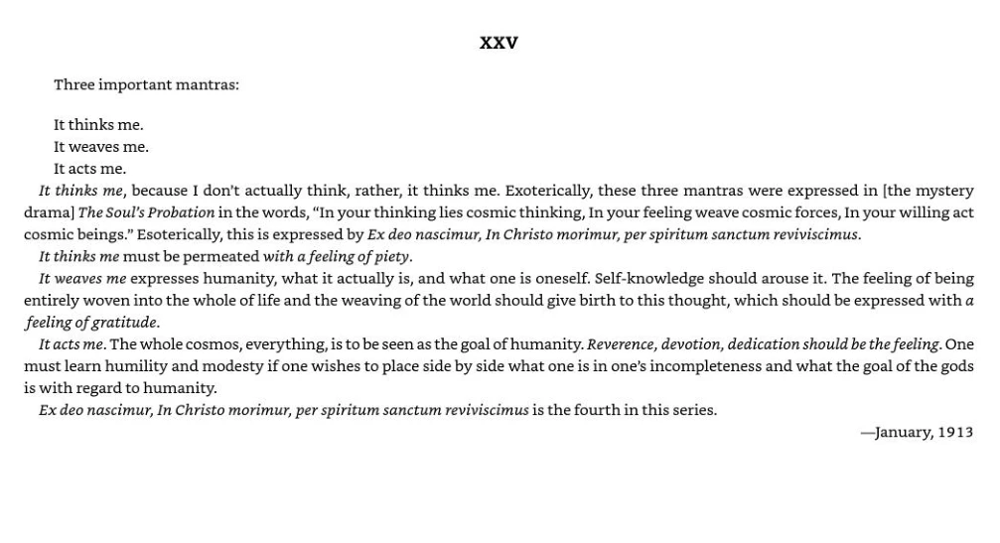
Leia a transcrição pesquisável
Three important mantras:
It thinks me.
It weaves me.
It acts me.
It thinks me, because I don’t actually think, rather, it thinks me. Exoterically, these three mantras were expressed in [the mystery drama] The Soul’s Probation in the words, “In your thinking lies cosmic thinking, In your feeling weave cosmic forces, In your willing act cosmic beings.” Esoterically, this is expressed by Ex deo nascimur, In Christo morimur, per spiritum sanctum reviviscimus.
It thinks me must be permeated with a feeling of piety.
It weaves me expresses humanity, what it actually is, and what one is oneself. Self-knowledge should arouse it. The feeling of being entirely woven into the whole of life and the weaving of the world should give birth to this thought, which should be expressed with a feeling of gratitude.
It acts me. The whole cosmos, everything, is to be seen as the goal of humanity. Reverence, devotion, dedication should be the feeling. One must learn humility and modesty if one wishes to place side by side what one is in one’s incompleteness and what the goal of the gods is with regard to humanity.
Ex deo nascimur, In Christo morimur, per spiritum sanctum reviviscimus is the fourth in this series.
—January, 1913Posição no PDF 194 · Inglês
Abra a página original em tamanho integral

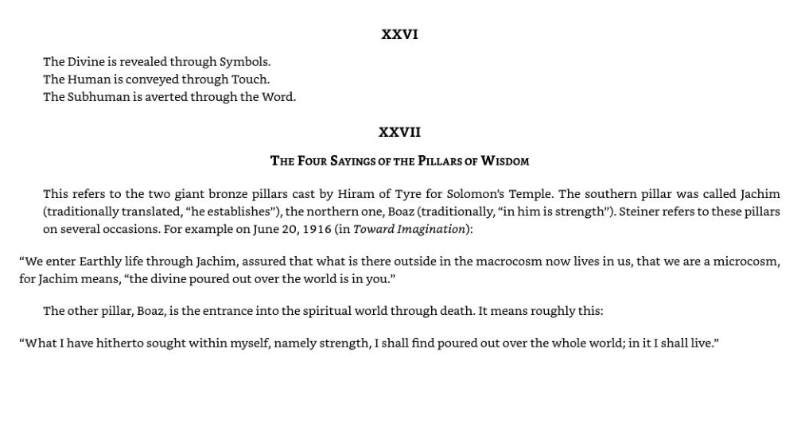
Leia a transcrição pesquisável
The Divine is revealed through Symbols. The Human is conveyed through Touch. The Subhuman is averted through the Word.
### XXVII
Tue Four SAYINGS OF THE PILLARS OF WISDOM
This refers to the two giant bronze pillars cast by Hiram of Tyre for Solomon’s Temple. The southern pillar was called Jachim (traditionally translated, “he establishes”), the northern one, Boaz (traditionally, “in him is strength”). Steiner refers to these pillars on several occasions. For example on June 20, 1916 (in Toward Imagination):
“We enter Earthly life through Jachim, assured that what is there outside in the macrocosm now lives in us, that we are a microcosm, for Jachim means, “the divine poured out over the world is in you.”
The other pillar, Boaz, is the entrance into the spiritual world through death. It means roughly this:
“What I have hitherto sought within myself, namely strength, I shall find poured out over the whole world; in it I shall live.”Posição no PDF 195 · Inglês
Abra a página original em tamanho integral

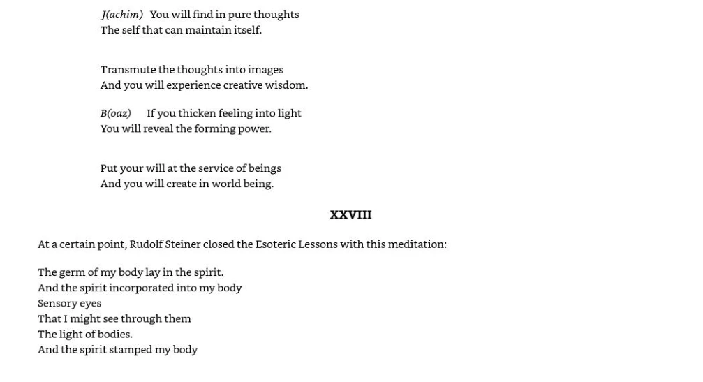
Leia a transcrição pesquisável
J(achim) You will find in pure thoughts The self that can maintain itself.
Transmute the thoughts into images And you will experience creative wisdom.
B(oaz) If youthicken feeling into light You will reveal the forming power.
Put your will at the service of beings And you will create in world being.
### XXVIII
At a certain point, Rudolf Steiner closed the Esoteric Lessons with this meditation:
The germ of my body lay in the spirit. And the spirit incorporated into my body Sensory eyes
That I might see through them
The light of bodies.
And the spirit stamped my bodyPosição no PDF 196 · Inglês
Abra a página original em tamanho integral

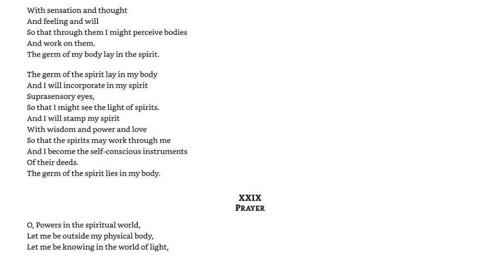
Leia a transcrição pesquisável
With sensation and thought
And feeling and will
So that through them I might perceive bodies And work on them.
The germ of my body lay in the spirit.
The germ of the spirit lay in my body
And I will incorporate in my spirit Suprasensory eyes,
So that I might see the light of spirits.
And I will stamp my spirit
With wisdom and power and love
So that the spirits may work through me And I become the self-conscious instruments
Of their deeds.
The germ of the spirit lies in my body.
O, Powers in the spiritual world, Let me be outside my physical body, Let me be knowing in the world of light,
XXIX PRAYERPosição no PDF 197 · Inglês
Abra a página original em tamanho integral

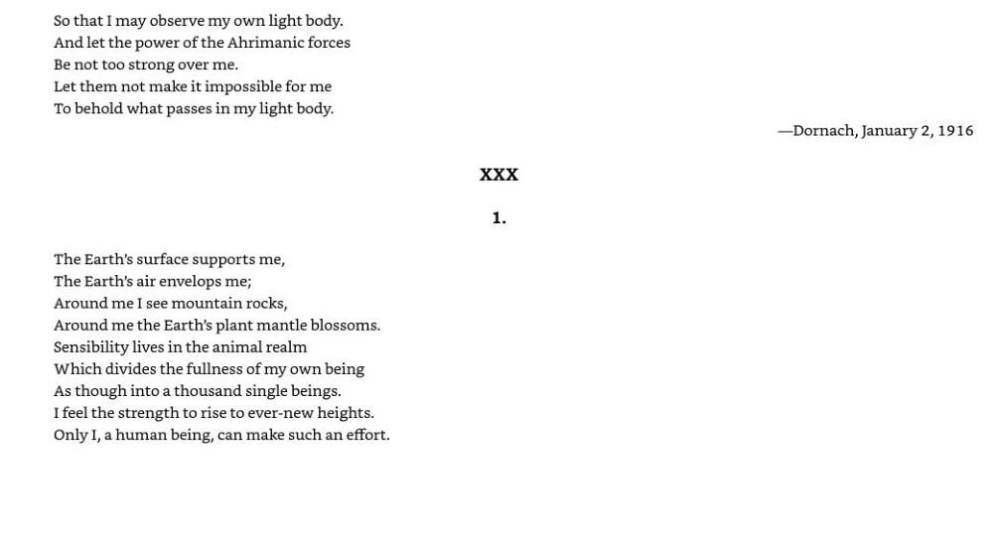
Leia a transcrição pesquisável
So that I may observe my own light body. And let the power of the Ahrimanic forces Be not too strong over me.
Let them not make it impossible for me To behold what passes in my light body.
The Earth’s surface supports me,
The Earth's air envelops me;
Around me! see mountain rocks,
Around me the Earth’s plant mantle blossoms. Sensibility lives in the animal realm
Which divides the fullness of my own being As though into a thousand single beings.
I feel the strength to rise to ever-new heights.
Only I, ahuman being, can make such an effort.
—Dornach, January 2, 1916Posição no PDF 198 · Inglês
Abra a página original em tamanho integral

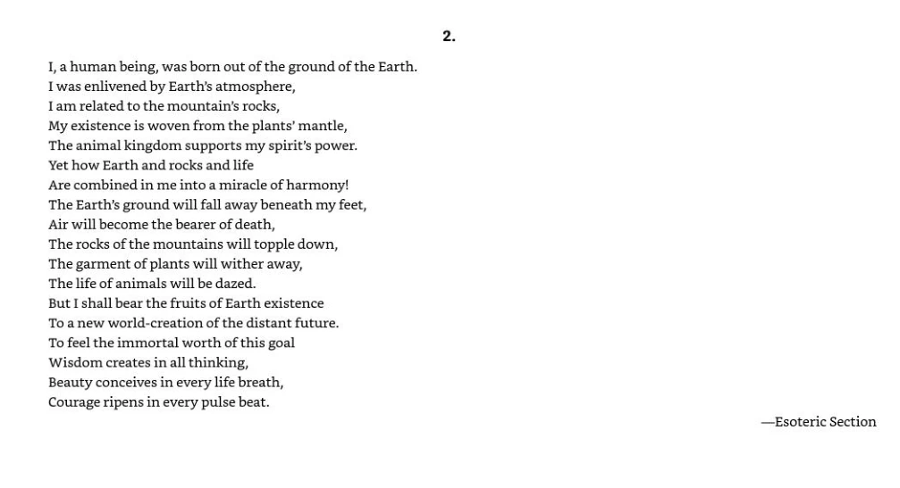
Leia a transcrição pesquisável
I, a human being, was born out of the ground of the Earth.
I was enlivened by Earth’s atmosphere,
Iam related to the mountain's rocks,
My existence is woven from the plants’ mantle, The animal kingdom supports my spirit’s power. Yet how Earth and rocks and life
Are combined in me into a miracle of harmony! The Earth’s ground will fall away beneath my feet, Air will become the bearer of death,
The rocks of the mountains will topple down, The garment of plants will wither away,
The life of animals will be dazed.
But I shall bear the fruits of Earth existence
To anew world-creation of the distant future.
To feel the immortal worth of this goal
Wisdom creates in all thinking,
Beauty conceives in every life breath,
Courage ripens in every pulse beat.
—Esoteric SectionPosição no PDF 199 · Inglês
Abra a página original em tamanho integral

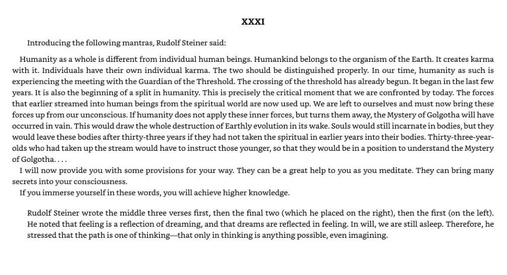
Leia a transcrição pesquisável
Introducing the following mantras, Rudolf Steiner said:
Humanity as a whole is different from individual human beings. Humankind belongs to the organism of the Earth. It creates karma with it. Individuals have their own individual karma. The two should be distinguished properly. In our time, humanity as such is experiencing the meeting with the Guardian of the Threshold. The crossing of the threshold has already begun. It began in the last few years. It is also the beginning of a split in humanity. This is precisely the critical moment that we are confronted by today. The forces that earlier streamed into human beings from the spiritual world are now used up. We are left to ourselves and must now bring these forces up from our unconscious. If humanity does not apply these inner forces, but turns them away, the Mystery of Golgotha will have occurred in vain. This would draw the whole destruction of Earthly evolution in its wake. Souls would still incarnate in bodies, but they would leave these bodies after thirty-three years if they had not taken the spiritual in earlier years into their bodies. Thirty-three-year- olds who had taken up the stream would have to instruct those younger, so that they would be in a position to understand the Mystery of Golgotha....
I will now provide you with some provisions for your way. They can be a great help to you as you meditate. They can bring many secrets into your consciousness.
If you immerse yourself in these words, you will achieve higher knowledge.
Rudolf Steiner wrote the middle three verses first, then the final two (which he placed on the right), then the first (on the left). He noted that feeling is a reflection of dreaming, and that dreams are reflected in feeling. In will, we are still asleep. Therefore, he stressed that the path is one of thinking—that only in thinking is anything possible, even imagining.Posição no PDF 200 · Inglês
Abra a página original em tamanho integral

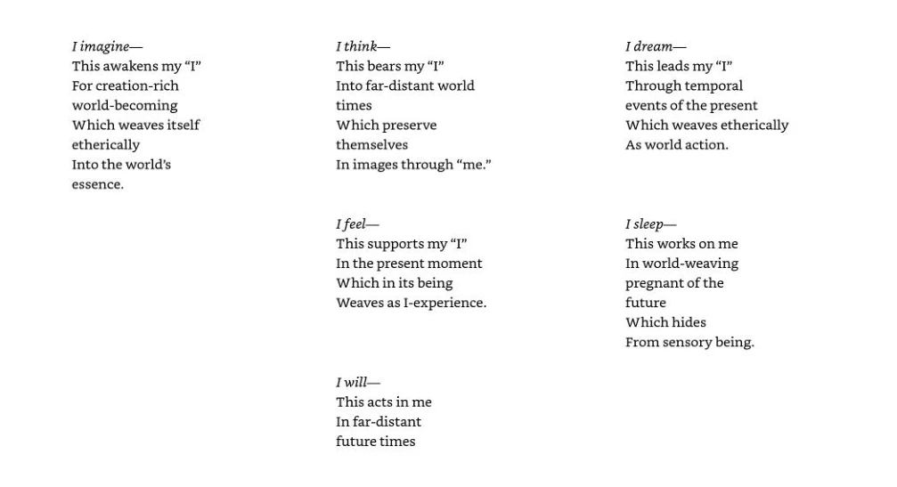
Leia a transcrição pesquisável
Timagine—
This awakens my “I” For creation-rich world-becoming Which weaves itself etherically Into the world’s
essence.
I think—
This bears my “I” Into far-distant world times Which preserve themselves In images through “me.”
I feel—
This supports my “I”
In the present moment
Which in its being
Weaves as I-experience.
Iwill—
This acts in me
In far-distant
future times
I dream—
This leads my “I” Through temporal events of the present Which weaves etherically As world action.
I sleep—
This works on me
In world-weaving
pregnant of the
future
Which hides
From sensory being.Posição no PDF 201 · Inglês
Abra a página original em tamanho integral

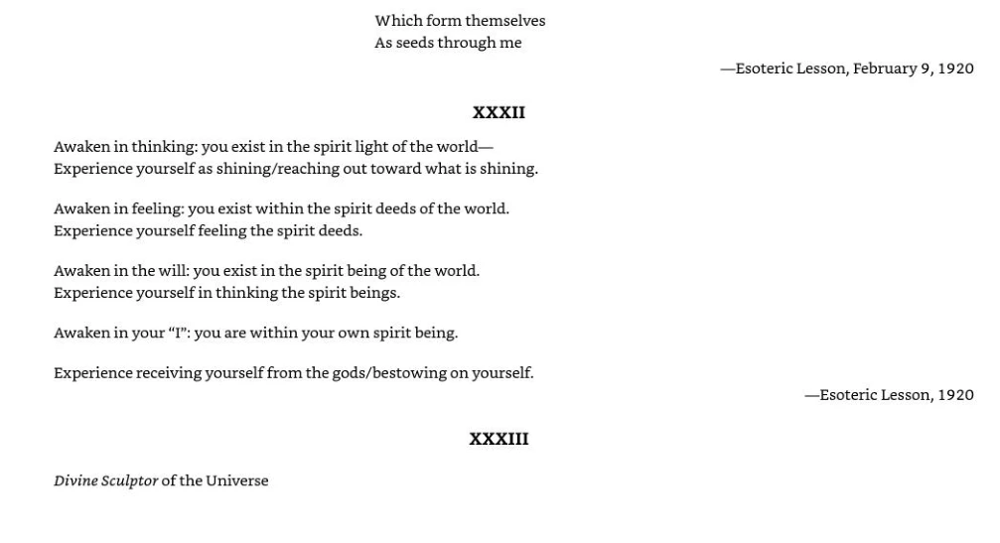
Leia a transcrição pesquisável
Which form themselves
As seeds through me
### XXXII
Awaken in thinking: you exist in the spirit light of the world— Experience yourself as shining/reaching out toward what is shining.
Awaken in feeling: you exist within the spirit deeds of the world. Experience yourself feeling the spirit deeds.
Awaken in the will: you exist in the spirit being of the world. Experience yourself in thinking the spirit beings.
Awaken in your “I”: you are within your own spirit being.
Experience receiving yourself from the gods/bestowing on yourself.
Divine Sculptor of the Universe
### XXXIII
—Esoteric Lesson, February 9, 1920
—Esoteric Lesson, 1920Posição no PDF 202 · Inglês
Abra a página original em tamanho integral

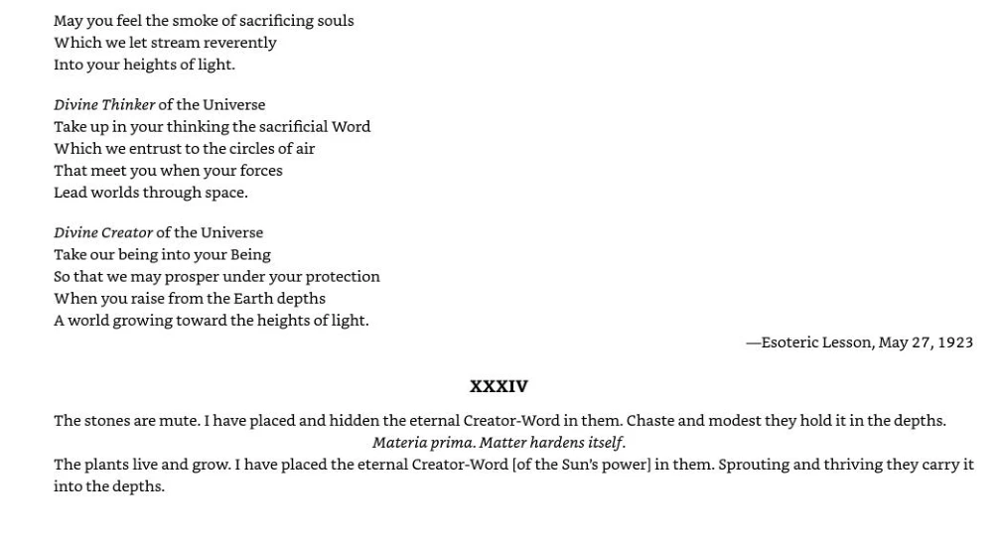
Leia a transcrição pesquisável
May you feel the smoke of sacrificing souls Which we let stream reverently Into your heights of light.
Divine Thinker of the Universe
Take up in your thinking the sacrificial Word Which we entrust to the circles of air
That meet you when your forces
Lead worlds through space.
Divine Creator of the Universe
Take our being into your Being So that we may prosper under your protection When you raise from the Earth depths A world growing toward the heights of light.
—Esoteric Lesson, May 27, 1923
### XXXIV
The stones are mute. I have placed and hidden the eternal Creator-Word in them. Chaste and modest they hold it in the depths.
Materia prima. Matter hardens itself.
The plants live and grow. I have placed the eternal Creator-Word [of the Sun’s power] in them. Sprouting and thriving they carry it
into the depths.Posição no PDF 203 · Inglês
Abra a página original em tamanho integral

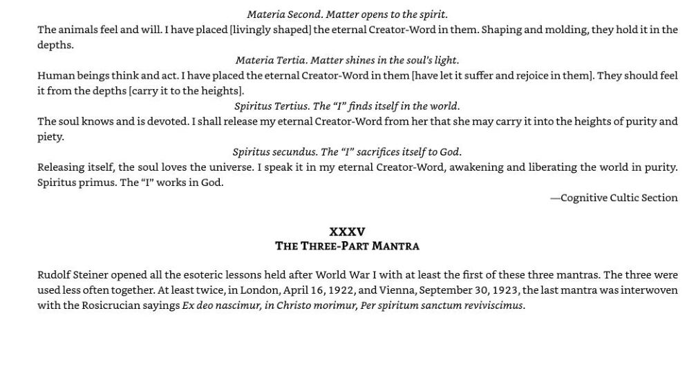
Leia a transcrição pesquisável
Materia Second. Matter opens to the spirit.
The animals feel and will. I have placed [livingly shaped] the eternal Creator-Word in them. Shaping and molding, they hold it in the depths.
Materia Tertia. Matter shines in the soul’s light.
Human beings think and act. I have placed the eternal Creator-Word in them [have let it suffer and rejoice in them]. They should feel it from the depths [carry it to the heights].
Spiritus Tertius. The “I” finds itself in the world.
The soul knows and is devoted. I shall release my eternal Creator-Word from her that she may carry it into the heights of purity and piety.
Spiritus secundus. The “I” sacrifices itself to God.
Releasing itself, the soul loves the universe. I speak it in my eternal Creator-Word, awakening and liberating the world in purity. Spiritus primus. The “I” works in God.
—Cognitive Cultic Section
XXXV
THE THREE-PART MANTRA
Rudolf Steiner opened all the esoteric lessons held after World War I with at least the first of these three mantras. The three were used less often together. At least twice, in London, April 16, 1922, and Vienna, September 30, 1923, the last mantra was interwoven with the Rosicrucian sayings Ex deo nascimur, in Christo morimur, Per spiritum sanctum reviviscimus.Posição no PDF 204 · Inglês
Abra a página original em tamanho integral

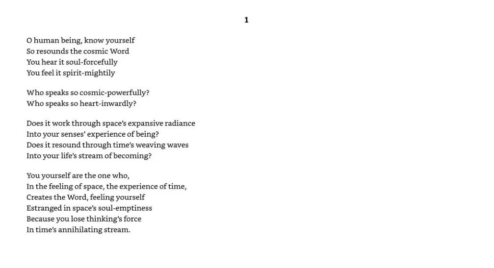
Leia a transcrição pesquisável
O human being, know yourself So resounds the cosmic Word
You hear it soul-forcefully
You feel it spirit-mightily
Who speaks so cosmic-powerfully? Who speaks so heart-inwardly?
Does it work through space’s expansive radiance Into your senses’ experience of being?
Does it resound through time’s weaving waves Into your life’s stream of becoming?
You yourself are the one who,
In the feeling of space, the experience of time, Creates the Word, feeling yourself
Estranged in space’s soul-emptiness
Because you lose thinking’s force
In time's annihilating stream.Posição no PDF 205 · Inglês
Abra a página original em tamanho integral

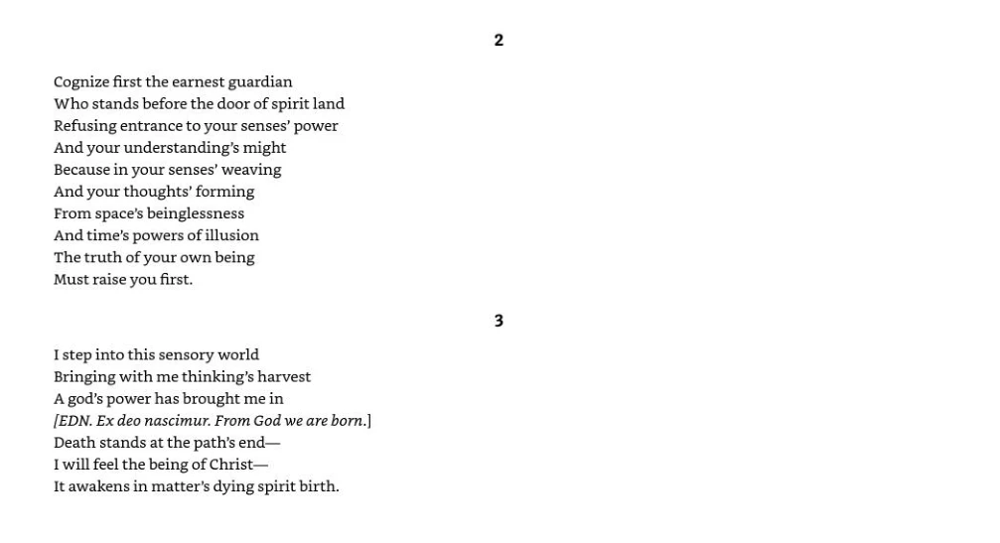
Leia a transcrição pesquisável
Cognize first the earnest guardian
Who stands before the door of spirit land Refusing entrance to your senses’ power And your understanding’s might Because in your senses’ weaving
And your thoughts’ forming
From space’s beinglessness
And time’s powers of illusion
The truth of your own being
Must raise you first.
I step into this sensory world
Bringing with me thinking’s harvest
A god’s power has brought me in
[EDN. Ex deo nascimur. From God we are born.] Death stands at the path’s end—
I will feel the being of Christ—
It awakens in matter’s dying spirit birth.Posição no PDF 206 · Inglês
Abra a página original em tamanho integral

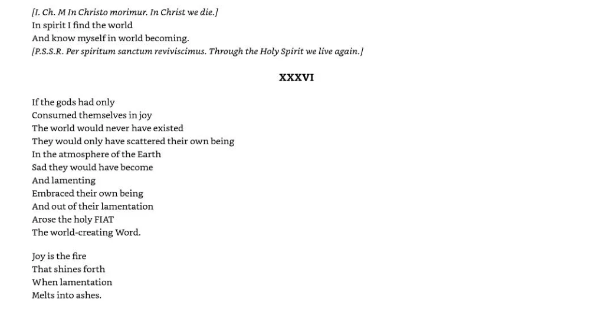
Leia a transcrição pesquisável
[I. Ch. M In Christo morimur. In Christ we die.]
In spirit I find the world
And know myself in world becoming.
[P.S.S.R. Per spiritum sanctum reviviscimus. Through the Holy Spirit we live again.]
XXXVI
If the gods had only
Consumed themselves in joy
The world would never have existed
They would only have scattered their own being In the atmosphere of the Earth
Sad they would have become
And lamenting
Embraced their own being
And out of their lamentation
Arose the holy FIAT
The world-creating Word.
Joy is the fire
That shines forth
When lamentation
Melts into ashes.Posição no PDF 207 · Inglês
Abra a página original em tamanho integral

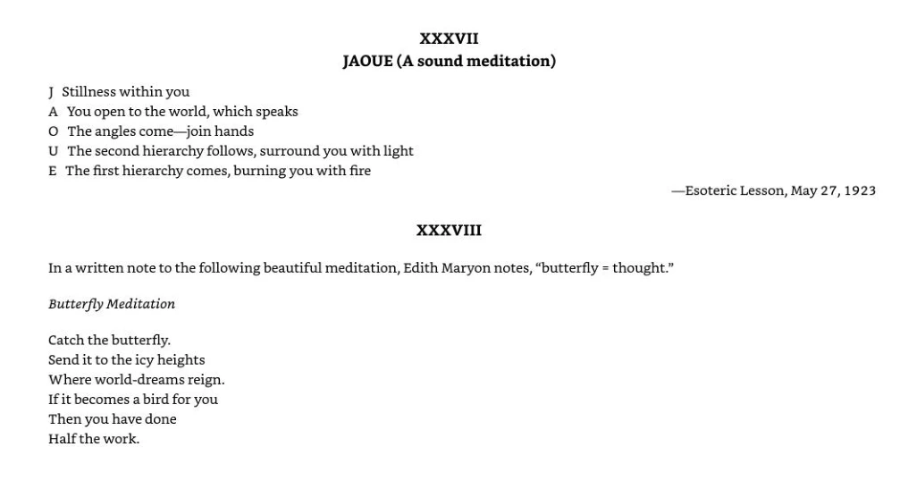
Leia a transcrição pesquisável
XXXVII
JAOUE (A sound meditation)
J Stillness within you A You open to the world, which speaks O The angles come—join hands U The second hierarchy follows, surround you with light E The first hierarchy comes, burning you with fire
### XXXVIII
—Esoteric Lesson, May 27, 1923
In a written note to the following beautiful meditation, Edith Maryon notes, “butterfly = thought.”
Butterfly Meditation
Catch the butterfly.
Send it to the icy heights Where world-dreams reign. If it becomes a bird for you Then you have done
Half the work.Posição no PDF 208 · Inglês
Abra a página original em tamanho integral

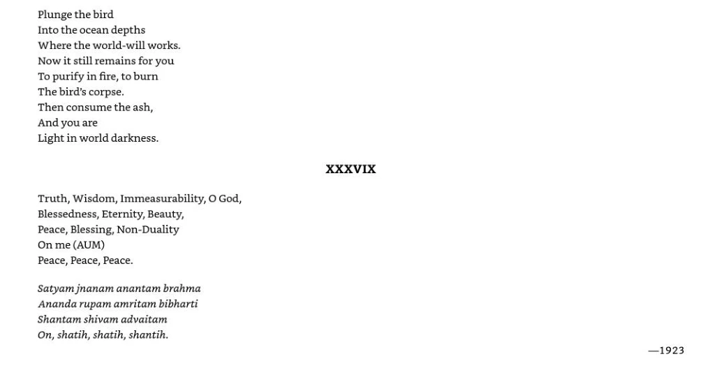
Leia a transcrição pesquisável
Plunge the bird
Into the ocean depths Where the world-will works.
Now it still remains for you To purify in fire, to burn The bird's corpse.
Then consume the ash,
And you are
Light in world darkness.
Truth, Wisdom, Immeasurability, O God, Blessedness, Eternity, Beauty,
Peace, Blessing, Non-Duality
On me (AUM)
Peace, Peace, Peace.
Satyam jnanam anantam brahma Ananda rupam amritam bibharti Shantam shivam advaitam
On, shatih, shatih, shantih.
—1923